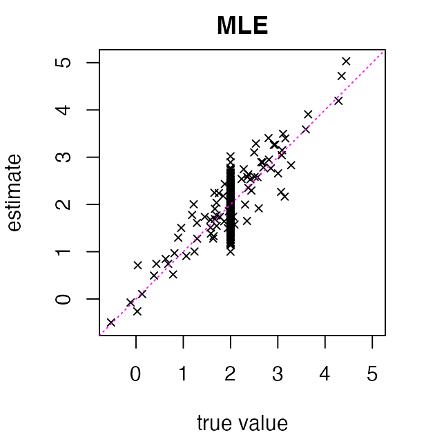
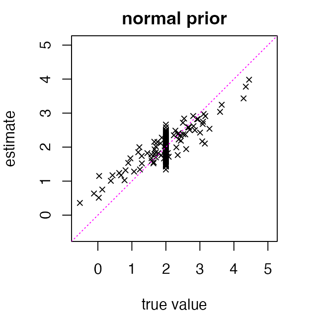
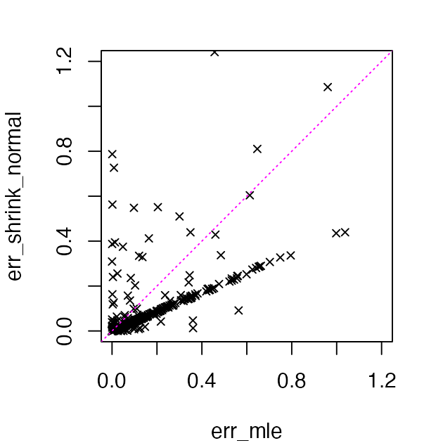
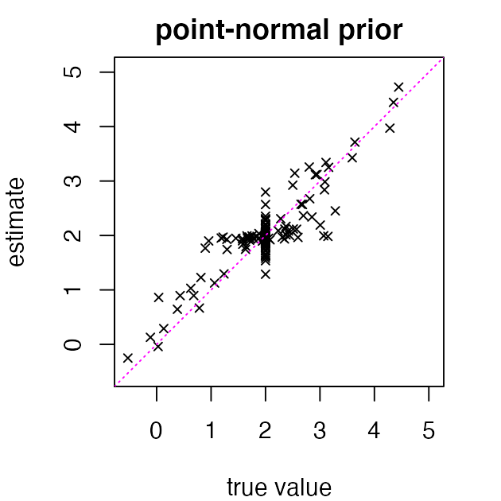

vignettes/shrink_intro.Rmd
shrink_intro.RmdGiven observations with known standard deviations , , the normal means model (Robbins 1951; Efron and Morris 1972; Stephens 2017; Bhadra et al. 2019; Johnstone 2019; Sun 2020) has where the unknown (“true”) means are the quantities to be estimated. Here and throughout, we use to denote the normal distribution with mean and variance .
The empirical Bayes (EB) approach to inferring attempts to improve upon the maximum-likelihood estimate by “borrowing information” across observations, exploiting the fact that each observation contains information not only about its respective mean, but also about how the means are collectively distributed (Robbins 1956; Morris 1983; Efron 2010; Stephens 2017). Specifically, the empirical Bayes normal means (EBNM) approach assumes that where is some family of distributions that is specified in advance and is estimated using the data.
The EBNM model is fit by first using all of the observations to estimate the prior , and then using the estimated distribution to compute posteriors and/or posterior summaries for the “true” means . Commonly, is estimated via maximum-likelihood and posterior means are used as point estimates for the unknown means. The ebnm package provides a unified interface for efficiently carrying out both steps, with a wide range of available options for the prior family .
For a detailed introduction, see our JSS paper. For further background, see for example John Storey’s book.
Our example data set consists of 400 data points simulated from a normal means model in which the true prior is a mixture of (a) a normal distribution centered at 2 and (b) a point-mass also centered at 2:
First, we simulate the “true” means from this prior:
Next, we simulate the observed means as “noisy” estimates of the true means (in this example, the noise is homoskedastic):
Although we know what the true means are in this example, we’ll treat them as quantities we cannot observe.
The maximum-likelihood estimates (MLEs) of the true means are simply :
par(mar = c(4, 4, 2, 2))
lims <- c(-0.55, 5.05)
plot(u, x, pch = 4, cex = 0.75, xlim = lims, ylim = lims,
xlab = "true value", ylab = "estimate", main = "MLE")
abline(a = 0, b = 1, col = "magenta", lty = "dotted")
We can do better than the MLE — and in fact some theory tells us we are guaranteed to do better — by learning a prior using all the observations, then “shrinking” the estimates toward this prior.
Let’s illustrate this idea with a simple normal prior in which the mean and variance of the normal prior are learned from the data. (Note that the normal prior is the wrong prior for this data set! Recall we that simulated data using a mixture of a normal and a point-mass.)
First, we fit the prior:
Next we estimate the true means using posterior means
.
We extract these posterior means using the coef()
method:
y <- coef(fit_normal)
par(mar = c(4, 4, 2, 2))
plot(u, y, pch = 4, cex = 0.75, xlim = lims, ylim = lims,
xlab = "true value", ylab = "estimate", main = "normal prior")
abline(a = 0, b = 1, col = "magenta", lty = "dotted")
These “shrunken” estimates are better when true means are near 2, but worse when they are far from 2. Still, they substantially improve the overall estimation error (the “root mean-squared error” or RMSE):
err_mle <- (x - u)^2
err_shrink_normal <- (y - u)^2
print(round(digits = 4,
x = c(mle = sqrt(mean(err_mle)),
shrink_normal = sqrt(mean(err_shrink_normal)))))
# mle shrink_normal
# 0.3599 0.2868Here’s a more detailed comparison of the estimation error:
par(mar = c(4, 4, 2, 2))
plot(err_mle, err_shrink_normal, pch = 4, cex = 0.75,
xlim = c(0, 1.2), ylim = c(0, 1.2))
abline(a = 0, b = 1, col = "magenta", lty = "dotted")
Indeed, the error increases in a few of the estimates and decreases in many of the other estimates, resulting in a lower RMSE over the 400 data points.
Let’s now see what happens when we use a family of priors that is
better suited to this data set — specifically, the “point-normal”
family. Notice that the only change we make in our call to
ebnm() is in the prior_family argument:
fit_pn <- ebnm(x, s, prior_family = "point_normal", mode = "estimate")Now we extract the posterior mean estimates and compare to the true values:
par(mar = c(4, 4, 2, 2))
y <- coef(fit_pn)
plot(u, y, pch = 4, cex = 0.75, xlim = lims, ylim = lims,
xlab = "true value", ylab = "estimate", main = "point-normal prior")
abline(a = 0, b = 1, col = "magenta", lty = "dotted")
The added flexibility of the point-normal prior improves the accuracy of estimates for means near 2, while estimates for means far from 2 are no worse than the MLEs. The result is that the overall RMSE again sees a substantial improvement:
The following R version and packages were used to generate this vignette:
sessionInfo()
# R version 4.5.1 (2025-06-13)
# Platform: aarch64-apple-darwin20
# Running under: macOS Sequoia 15.5
#
# Matrix products: default
# BLAS: /Library/Frameworks/R.framework/Versions/4.5-arm64/Resources/lib/libRblas.0.dylib
# LAPACK: /Library/Frameworks/R.framework/Versions/4.5-arm64/Resources/lib/libRlapack.dylib; LAPACK version 3.12.1
#
# locale:
# [1] en_US.UTF-8/en_US.UTF-8/en_US.UTF-8/C/en_US.UTF-8/en_US.UTF-8
#
# time zone: America/New_York
# tzcode source: internal
#
# attached base packages:
# [1] stats graphics grDevices utils datasets methods base
#
# other attached packages:
# [1] ebnm_1.1-38
#
# loaded via a namespace (and not attached):
# [1] trust_0.1-8 Matrix_1.7-3 gtable_0.3.6 jsonlite_2.0.0
# [5] dplyr_1.1.4 compiler_4.5.1 tidyselect_1.2.1 Rcpp_1.1.0
# [9] jquerylib_0.1.4 scales_1.4.0 splines_4.5.1 systemfonts_1.2.3
# [13] textshaping_1.0.1 yaml_2.3.10 fastmap_1.2.0 lattice_0.22-7
# [17] ggplot2_3.5.2 R6_2.6.1 generics_0.1.4 mixsqp_0.3-54
# [21] horseshoe_0.2.0 deconvolveR_1.2-1 knitr_1.50 htmlwidgets_1.6.4
# [25] tibble_3.3.0 desc_1.4.3 RColorBrewer_1.1-3 bslib_0.9.0
# [29] pillar_1.11.0 rlang_1.1.6 cachem_1.1.0 SQUAREM_2021.1
# [33] xfun_0.52 fs_1.6.6 sass_0.4.10 truncnorm_1.0-9
# [37] invgamma_1.2 cli_3.6.5 pkgdown_2.1.3 magrittr_2.0.3
# [41] digest_0.6.37 grid_4.5.1 rstudioapi_0.17.1 irlba_2.3.5.1
# [45] lifecycle_1.0.4 vctrs_0.6.5 evaluate_1.0.4 glue_1.8.0
# [49] farver_2.1.2 ragg_1.4.0 ashr_2.2-63 rmarkdown_2.29
# [53] pkgconfig_2.0.3 tools_4.5.1 htmltools_0.5.8.1